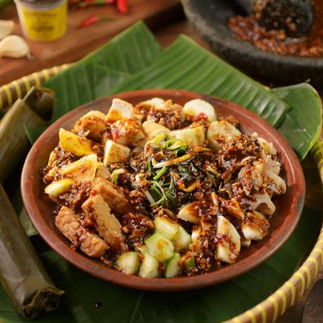

Rujak Cingur

Description
Rujak Cingur is a fruit-vegetables salad with spicy sauce. Literally "cingur" means mouth in Javanese. The flavour is really unique, because it combines of slices of cooked buffalo or beef lips, yam bean, young raw mango, pineapple, cucumber, bean sprout, kangkung, lontong, fried tofu and tempe. All served with black sauce made from gralic, chillies, a slice of young banana, petis and grond peanuts
| Category | : Vegetables |
| Difficulty | : Easy |
| Cooking time | : 30 minutes |
Ingredients
- 50g bean sprout, cleaned
- 50g shredded cabbage
- 1 stalk of kangkung
- 100g egg noodle
- 1 cucumber
- 1 young raw mango
- 1/2 pineapple
- 2 fried tofu
- 200g cooked buffalo or beef lips
- Lontong
Suace
- 100g fried peanut
- 4 tablespoon petis
- 2 or 3 bird's eyes chillies
- 1 tablespoon of fried sliced garlic
- 1 teaspoon palm sugar
- 1 teaspoon tamarind
- Few slices of young banana
How to make
- Clean all the vegetables, then cook. Set aside
- Peel and clean all the fruit and then slice into small pieces. Set aside
- Prepare the sauce by grind or blend all the ingredients, then add a little of water to make it thicker.
- Serve : cut lontong into small slices, then arrange it on the plate, add cooked vegetables, the fruits, fruid tofu, tempe, cingur, and then pur with the sauce. Garnish with krupuk udang